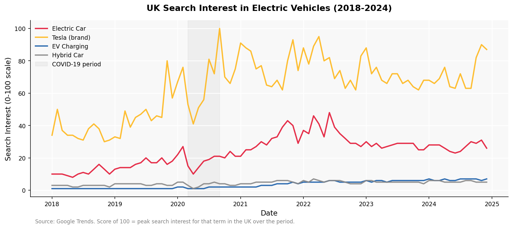
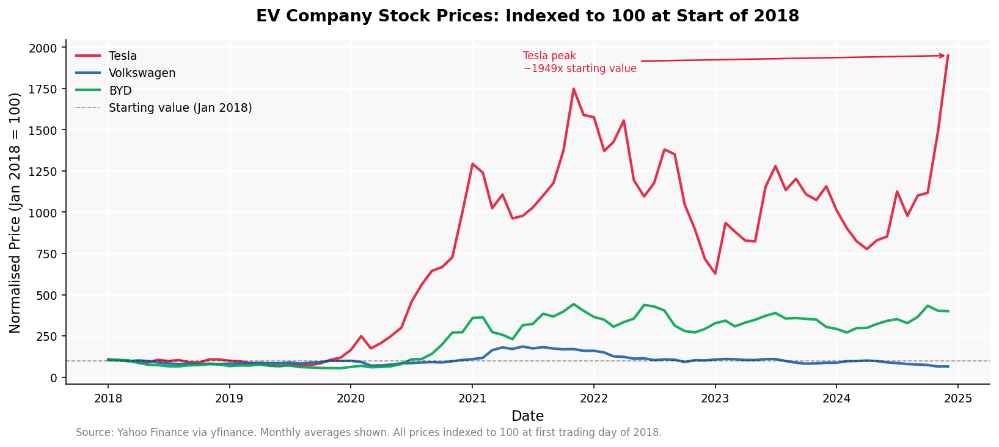
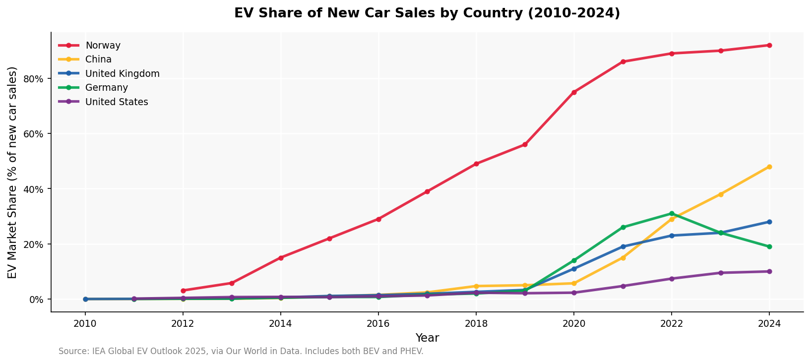

Introduction
In the last decade one topic has been dominating British search engines: Tesla. The brand played a key role into the scalability of electric vehicles, transforming them into a commercially viable product for consumers.
In 2024, nearly 1 in 3 cars sold in the UK were electric, Norway now sells more electric cars than petrol ones, and Tesla's stock price has risen nearly 20 times its value in three years.
This blog explores the electric vehicle revolution, whether it is as transformative as widely portrayed, or has investor excitement outpaced reality. Has the world kept up and what does the data tell us?
This post uses data from Google Trends, stock markets, the International Energy Agency (IEA), other academic sources and a statistical model to find out.
The Hype: What are people searching for?
Google trends data in the UK explains the public interest in electric vehicles through the indexing of peak search results. The figures therefore show relative interest over time, not absolute search volumes. To much surprise, the results revealed that brand image outpaced the generic product.

Between 2018 and 2024 the gap between Tesla and everything else is astonishing. Tesla averaged a score of 63, whereas the term "Electric car", averaged at 24.
During COVID-19 (the shaded area in Figure 1) all searches fell sharply, but the recovery was remarkably different. By late 2020, "Tesla" reached its all time peak of 100, whilst "Electric car" recovered at just 21, less than a quarter of Tesla's score in the same month. Showing how the brand generated nearly five times the public attention as the product it sells did.
The hype trend is also highlighted by the low number of searches for "EV charging", which did not surpass 5 across the whole period. Suggesting that consumers were intrigued by the EV story but they were clearly not ready to participate in the purchasing.
Market Reaction: How growing consumer interest affected the stock market.
Tesla's normalised monthly average stock index reached 1,949 in December 2024, meaning that the stock price was trading at 20 times its January 2018 price. In contrast to Volkswagen which peaked at 1.85 times and BYD at 4.4 times its starting values over the same period.

To explain Tesla's extraordinary ascent, we need to understand the narrative and media coverage behind the brand. Financial media portrayed Tesla as a technology company not an automotive one, often comparing it to Apple (Jurevicius, 2025). Placing it as a dominant player in the electrified future.
In addition to this, the geographic differences between the companies may have also played a role in the market reaction. With BYD being listed on Chinese exchanges it was less visible to Western investors, as the company did not market cars to international consumers until 2022 (Financhill Editor, 2023). Then, with Tesla being listed on the NASDAQ, which is frequently covered by the US media, it became the more obvious EV investment most Western investors knew. A positive feedback loop emerged, where the rising stock price, led to more media coverage and therefore new buyers. This pushed Tesla's stock up over 500% in 2020 alone, even when the company was not profitable without regulatory credits (Hoium, 2020). Alongside the investor excitement around Musk's AI and political ambitions, placed Tesla en-route to success from an investors point of view.
Global Reality
The stock market gives an indication around investor's expectations. Practically, understanding the EV market share across different economies provides an understanding of the global panorama.

In 2024 Norway reached an EV market share of 92%, whereas the US reached only 10% in the same year. This discrepancy is due to policy. Tax and toll exemptions, free parking and the roll out of charging infrastructure are a couple of measures that Norway has put in place since the early 2000s, long before demand for EVs existed. Originally, the policies acted as targeted support for the Norwegian brand TH!NK, but when the company was unsuccessful, support continued for the environmental benefits (Jaeger, 2025). By contrast, the backtracking of EV tax credits and premium-priced EVs in the US has hindered the EV growth.
The most striking figure is the decline in Germany. Market share of EV's peaked at 31% in 2022 followed by a decrease of 12% in 2024, due to the removal of all EV subsidies in 2023 (Virta, 2025). Over a single policy decision, one of the largest car markets went into reversal, hinting that the EV transition may be dependent on politics rather than genuine consumer demand.
On the other hand, China has exceeded all other countries by reaching an EV market share of 48% in 2024, translating to 11.3 million cars. In absolute terms, it is a scale that no other country has come close to, a representation of China's strategic domestic manufacturing and sustained government support (Jaeger, 2025).